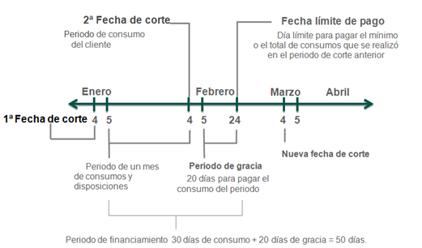

¿Cómo sacarle el mayor provecho a tu tarjeta?
Si pagas tu saldo total, puedes financiarte por un periodo máximo de 50 días sin generar intereses si compras al día siguiente de la fecha de corte.
Si no vas a pagar el saldo total del mes, es recomendable abonar lo más que puedas por arriba del monto mínimo a pagar en cuanto tengas la disponibilidad de efectivo. No esperes tu fecha límite de pago, con el fin de reducir el cargo por intereses.
Para explicar lo anterior observa la imagen que también señala las fechas importantes a tomar en cuenta cuando se utiliza una tarjeta de crédito:
- El primer periodo inicia el 5 de enero y concluye el 4 de febrero (fecha de corte), en el cual puedes realizar compras y disposiciones con la tarjeta.
- El 4 de febrero es la fecha de corte, es decir, el día que el banco hace un alto (corte) para hacer los cálculos de todas las operaciones registradas del 5 de enero al 4 de febrero.
- Del 4 al 24 de febrero se le conoce como periodo de gracia, son 20 días en los cuales puedes abonar a tu tarjeta el saldo total de las compras y disposiciones para no generar intereses o cobro de comisiones.
- El 24 de febrero es la fecha límite de pago, día en el cual tienes que abonar, al menos, el pago mínimo del mes señalado en el estado de cuenta.
- En conclusión, si compras un producto o pagas un servicio con la tarjeta de crédito el 5 de enero, se tendría que pagar máximo el 24 de febrero, 50 días después, que resultan de sumar los 30 días entre una fecha de corte y otra, más los 20 días correspondientes a la gracia del periodo, lo que hace un total de 50 días de financiamiento.
Conclusiones
- La tarjeta de crédito no es una extensión de tu ingreso.
- No gastes más de lo que ganas.
- Usa tu tarjeta como medio de pago.
- Procura pagar el saldo total del mes, o más del mínimo para reducir tu deuda. Tienes hasta tu fecha límite de pago para abonarlo.
- El crédito puede constituir una excelente forma de financiarnos si lo usamos con responsabilidad.
Para el cálculo de tarjeta de crédito se puede visitar la página: https://phpapps.condusef.gob.mx/condusef_pagomin/datos.php